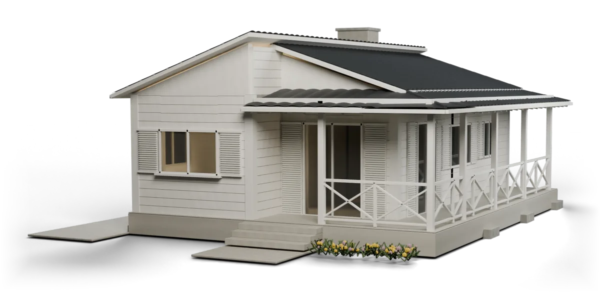
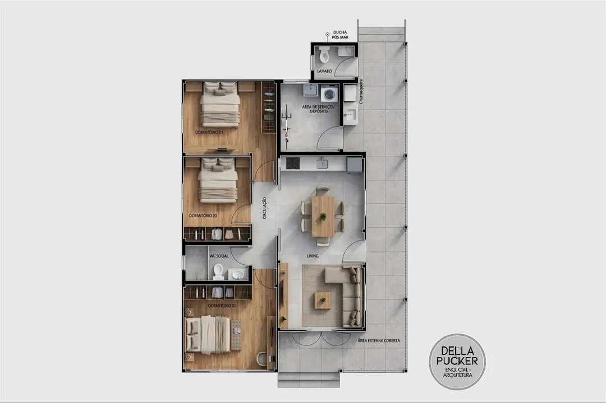

Projetos
Arquitetura para definir os espaços. Engenharia para desenvolver as soluções técnicas que dão suporte à construção.
Concepção + técnica
Della & PuckerCriciúma · SC
Arquitetura e engenharia civil em Criciúma.
Projetos, regularização, execução e visualização 3D.
Balneário Rincão · estudo baseado em render oficial
01 / Intenção + técnica
O espaço que você imagina.
A técnica para construir.
02 / Áreas de atuação
Da definição dos espaços à execução da obra: conheça os serviços de arquitetura e engenharia civil da Della & Pucker.
Arquitetura para definir os espaços. Engenharia para desenvolver as soluções técnicas que dão suporte à construção.
Concepção + técnicaSeu imóvel já existe? Converse sobre a situação atual e entenda quais demandas de regularização podem ser atendidas.
Imóvel + documentaçãoDo projeto ao canteiro: atuação na execução de obras, com serviços e responsabilidades definidos conforme a necessidade.
Projeto + obraVisualize volumes, materiais e a relação entre os ambientes antes da obra, por meio de representações tridimensionais do projeto.
Espaço + visualização03 / Projetos publicados
Um recorte do trabalho apresentado no perfil da empresa.
04 / O primeiro contato
Construir, regularizar ou visualizar um projeto?
Conte o que você tem em mente.
Se já houver um terreno, imóvel ou obra, mencione a situação.
Inicie a conversa com a equipe.
